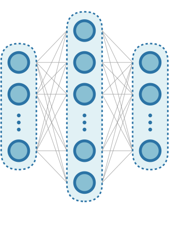
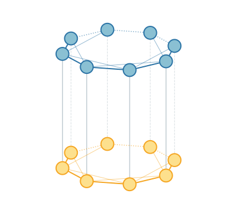

QCMM: Evidential Quantum Multimodal Fusion Neural Network
2026.05We propose QCMM, a feature entanglement-based quantum multimodal fusion framework that maps Dempster-Shafer evidence theory to quantum circuits, achieving interpretable fusion with parameter efficiency.
Motivation
Classical multimodal fusion faces a fundamental dilemma: feature-level fusion (deep neural networks) achieves high accuracy but is a "black-box" with parameter explosion, while decision-level fusion (e.g., Bayesian inference, DS theory) is interpretable but yields lower accuracy.
We observe a mathematical isomorphism between the power set structure of DS theory and the tensor product structure of the quantum Hilbert space. This insight allows us to physically implement evidence combination rules (conjunctive combination rule, CCR) through quantum entanglement, achieving both interpretability and high expressiveness.
Architecture
The QCMM framework is a hybrid quantum-classical architecture with three key stages:

Stage 1: Unimodal Feature Alignment
Classical single-layer MLPs (hidden size 64, input/output dim 8) extract and align features from each modality. PCA is used for offline dimensionality reduction to $d = 8$ dimensions. The MLPs implicitly learn semantic alignment — the downstream bit-wise quantum fusion forces corresponding features to mapped positions.
$$\mathbf{v}_m = \mathbf{W}_2^{(m)} \sigma(\mathbf{W}_1^{(m)} \mathbf{x}_m + \mathbf{b}_1^{(m)}) + \mathbf{b}_2^{(m)}$$

Stage 2: Quantum Embedding and Evidence Fusion
Aligned features are angle-encoded into quantum states:
$$|\psi_m\rangle = \bigotimes_{j=1}^{d} R_y(v_{m,j}) |0\rangle_j$$
A target register $|0\rangle^{\otimes d}_f$ is initialized. The core fusion uses bit-wise CC-$R_y(\theta)$ gates: for each feature index $j$, the two modality qubits simultaneously control a rotation on the target qubit. This physically implements the DS conjunctive combination rule — the target qubit rotates only when both modalities assert evidence (state $|1\rangle$).
$$U_f^{(j)}(\theta_j) = (I_{hl} - |11\rangle\langle 11|_{hl}) \otimes I_f + |11\rangle\langle 11|_{hl} \otimes R_y(\theta_j)_f$$
The trainable angle $\theta_j$ represents the learnable belief mass assigned to the combined evidence. Control registers are then traced out, producing a fused density matrix.

Stage 3: QCNN Deep Feature Extraction
A Quantum Convolutional Neural Network (QCNN) hierarchically extracts features from the fused state. Two stacked convolutional-pooling blocks reduce 8 qubits to 2 qubits. We investigate three kernel ansatzes:
- $U_{SO4}$: $R_y$/$R_z$ rotations with CNOT — for real-valued amplitudes (6 params)
- $U_{SU4}$: Full $SU(4)$ two-qubit unitary — maximum expressibility (15 params)
- $U_{15}$: Hardware-efficient deep ansatz with high entangling capability (4 params)
Pooling uses parameterized controlled rotations ($R_z$, $R_x$) to compress information from source to target qubits. Final projective measurement on 2 qubits yields classification probabilities via the Born rule.
Theoretical Properties
Parameter Efficiency
Total quantum parameters scale linearly: $P_q = d + L \times K$ where $d = 8$ is feature dimension, $L = 2$ is QCNN layers, and $K < 25$ is the constant per-block parameter count. QCMM uses only 8 fusion parameters compared to 42k for classical CrossFusion and 9.2M for FusAtNet.
Decomposability and Parallelism
The bit-wise topology decomposes the global 24-qubit system into 8 independent 3-qubit channels. Both forward evolution and backward gradients are confined within local subsystems, fundamentally preventing barren plateaus.
Logical Interpretability
Each CC-$R_y(\theta_j)$ gate implements one step of the DS conjunctive combination rule. The rotation angle encodes the learned belief mass: $m(\text{fused}_j) \propto \sin^2(\theta_j / 2)$. Larger $\theta_j$ means the model trusts this cross-modal correlation more. This transforms fusion from an opaque operation into transparent evidence reasoning.
Experimental Results
We evaluate on Houston2013 (15-class urban HSI+LiDAR, 4-class subset) and Trento (6-class rural HSI+LiDAR, 4-class subsets), using PyTorch + PennyLane on RTX 3090.
Quantum Fusion Comparison (Houston2013, $U_{SU4}$ kernel)
| Method | Fusion Params | OA | AA | Kappa | F1 |
|---|---|---|---|---|---|
| Circuit-Block | 0 | 0.9559 | 0.9809 | 0.9709 | 0.9809 |
| All-to-All | 0 | 0.8679 | 0.9670 | 0.9496 | 0.9655 |
| QCMM (Ours) | 8 | 0.9842 | 0.9859 | 0.9786 | 0.9859 |
Classical Model Comparison
| Method | Total Params | OA |
|---|---|---|
| EndNet | 85k | 0.9910 |
| CrossFusion | 99k | 0.9700 |
| FusAtNet | 17,440k | 0.9950 |
| QCMM (Ours) | 2.2k | 0.9842 |
QCMM achieves accuracy within 1% of the best classical model with ~1/40 the parameters of CrossFusion and ~1/7900 of FusAtNet.

Generalization
Across 7 different classification tasks on Houston2013 and Trento, QCMM maintains stable accuracy (OA 0.85–1.00) with minimal fluctuation, demonstrating strong generalization.
Ablation Study
- w/o MLP: Removing unimodal MLPs drops OA from 0.9842 to 0.7452 — confirms critical role of feature alignment.
- Fixed Fusion (CC-NOT, $\theta = \pi$): Fixing fusion angles drops OA to 0.9661 — proves trainable parameters capture meaningful belief masses.
- HSI-only: OA 0.9785; LiDAR-only: OA 0.8139 — verifies effective exploitation of complementary information.
- Shallow QCNN: OA drops to 0.9740 — confirms hierarchical structure is essential.
Conclusion
QCMM demonstrates that quantum multimodal fusion can be both interpretable and efficient. By mapping DS evidence theory to quantum circuits via CC-$R_y$ gates, we achieve:
- Logical interpretability through evidence-theoretic physical semantics
- Linear parameter scaling with exponential feature space access
- Immunity to barren plateaus via bit-wise decomposability
- Competitive accuracy with classical models despite using orders of magnitude fewer parameters